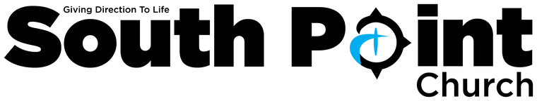

Bible Concordance
Free Bible study that works without the internet: a full study app for your Windows computer, and a small companion for your Android phone.
Which device is it for?
Windows computer
The full study app
- Ask a question and get an answer that quotes the Bible first; Bible stories for all ages
- Strong's word study, Hebrew and Greek; seven commentaries, maps, people and places
- Themes for the church year, sermon builder with slides you can present, read aloud, free library
Android phone
A pocket companion
- Read, search, word study and study notes
- Bookmarks, highlights, notes, plans and a daily reminder
- A library of commentaries and books, verse pictures, 1,200+ more Bibles
Which one is for me?
The Windows app is for deep study at a desk: commentaries, the original languages, maps and the sermon builder. The phone app is for reading, searching and studying a verse wherever you are, and has a few things of its own, such as verse pictures and a daily reminder. Many people use both: at home on your Wi-Fi the two keep your bookmarks, highlights, notes and reading plans the same, and a backup file carries them anywhere.
| What you get | Windows | Android |
|---|---|---|
| Read BSB, KJV, ASV, WEB and YLT offline, with the words of Jesus in red | ✓ | ✓ |
| Ask a question in your own words and get an answer that quotes the Bible first | ✓ | — |
| Bible stories, “Verses for…” pages and children's pages | ✓ | — |
| Themes for the church year, with your own colours and fonts | ✓ | — |
| Search by reference, word or subject | ✓ | ✓ |
| Bookmarks, highlights, and notes with your own tags | ✓ | ✓ |
| Reading plans | ✓ | ✓ |
| Side-by-side reading and comparing translations | ✓ | ✓ |
| Bible dictionaries and topics | ✓ | ✓ |
| Cross-references | List and graph | List |
| Read aloud, with a sleep timer | Natural voice | Phone's voices |
| Strong's word study | ✓ | BSB and KJV |
| Commentary | Seven commentaries | Tyndale study notes, and more to download |
| More Bibles to download, in many languages | ✓ | ✓ |
| Light and dark themes, text colour, high contrast | ✓ | ✓ |
| Keep phone and computer in step over your home Wi-Fi | ✓ | ✓ |
| Backup file that works in both apps | ✓ | ✓ |
| Automatic weekly backup | ✓ | — |
| Verse pictures to save or share | — | ✓ |
| Reading streak | ✓ | ✓ |
| Daily reminder | — | ✓ |
| Hebrew and Greek texts, search by grammar | ✓ | — |
| Map, people and places, cross-reference graph | ✓ | — |
| Sermon builder, slides with a presenter view, printing, study sheets | ✓ | — |
| Library of commentaries, dictionaries, books and devotionals | ✓ | ✓ |
| Add e-Sword and MySword modules you have | ✓ | ✓ |
| Bible pictures library | ✓ | — |
| Tells you when a new version is out and installs it | ✓ | ✓ |
Music
Southern Cross Music Songs to listen to while you read and pray. Hear them on YouTube Music, and subscribe to follow the artist and hear what's new. ♫ Listen and subscribe on YouTube Music →Questions
Is Bible Concordance really free?
Yes. Both apps are free for anyone to install, use, copy and share, for personal, church or ministry use. There are no adverts, no account and no subscription, and it will never be sold.
Does it work without the internet?
Yes. The Bibles, Strong's dictionaries, commentaries and study data are inside the apps. The internet is only needed for optional downloads: more Bibles, library books and new versions.
Which Bible translations are included?
The Berean Standard Bible (BSB), King James Version (KJV), American Standard Version (ASV), World English Bible (WEB) and Young's Literal Translation (YLT) are built in, with the Hebrew and Greek texts in the Windows app. Over a thousand more free translations in hundreds of languages can be downloaded. NIV, NKJV and ESV can be shown online in the Windows app with your own free key from the publisher.
Can I use my e-Sword or MySword modules?
Yes. Both apps can add e-Sword and MySword Bibles, commentaries, dictionaries, lexicons, books and devotionals, as well as SWORD modules, from files you have. Modules locked by their publisher (bought ones) cannot be opened.
The MyBible format works too. More Bibles, commentaries, dictionaries and devotionals in that format are offered for download by PH4.org. If you already have any of those files in your downloads, the apps can add them: use Add from file in the Library (on the phone, Add from a file).
Not part of the apps. PH4.org is an independent website and has no connection with Bible Concordance. Nothing from it is included in the apps, and the apps never fetch anything from it. If you use it, you choose and download the files yourself, and each file has its own terms, so please make sure you are allowed to use it.
Do my notes stay the same on my phone and computer?
Yes. At home on your Wi-Fi, the Android app and the Windows app keep your bookmarks, highlights, notes and reading plans in step, talking straight to each other with no cloud or account. Computers can also keep in step through a folder they share.
Is there a version for iPhone or Mac?
Not at the moment: there is a Windows app for computers and an Android app for phones.
Is it safe to install?
Yes. The Windows app comes from the Microsoft Store and the Android app from Google Play, so each is checked and signed by the store it comes from. Neither needs an account or collects anything about you. The Android app is in its early release on Google Play, and can also be downloaded from this website as a file, which Android asks you to allow.
Free, really
Bible Concordance is free to use by anyone — install it, use it, copy it and share it with others at no cost, for personal, educational, church or ministry use. It will never be sold, licensed for a fee, or charged for in any form.
Every text and dataset bundled in the apps is public domain or released under an open licence that permits redistribution. Copyrighted modern translations (NIV, NKJV, ESV) are never bundled — the Windows app can show them live, over the internet, with your own key from the publisher, and they remain their property.
Full attribution for every bundled text, dictionary, commentary and dataset is on the credits page.
Want to say thank you?
This app is free, and it will stay free. Please don't send any money, instead pay it forward.
If you'd like to give something back, give to your local Church or Charity. You make a difference, just be kind to someone today. Be Jesus to someone today.
♫ Listen: Everyday Angel — Southern Cross Music
"Freely you have received; freely give." Matthew 10:8
Thank you to Pastor Mike & South Point Church for your inspiration.
